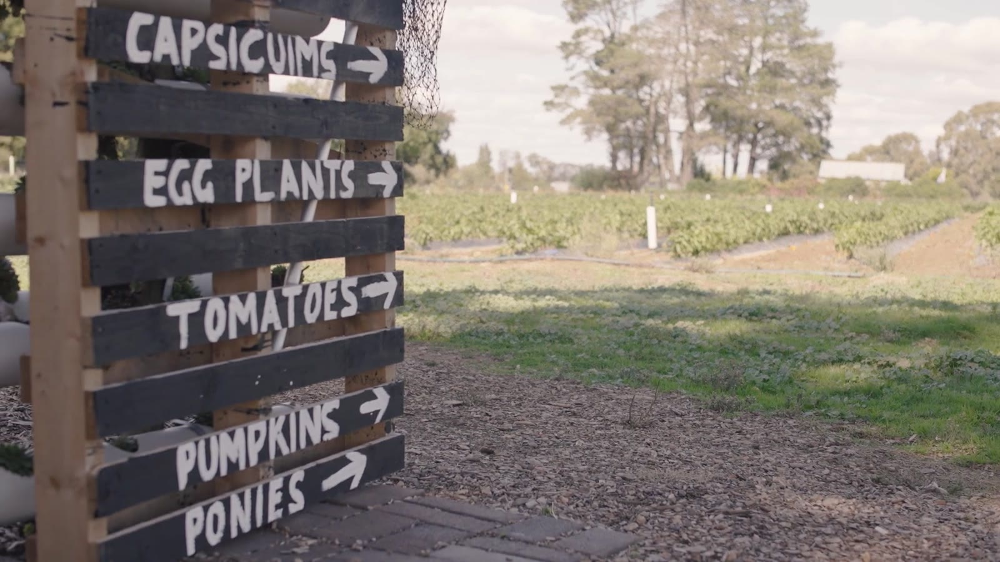
A not-for-profit berry farm near Orange NSW
Pick your own berries and seasonal vegetables on the foothills of Mount Canobolas, meet the farm animals, and take home handmade jams, coulis, pure honey and olive oil made from what we grow.
About Huntley Berry Farm
Huntley Berry Farm is an OCTEC-owned NDIS service and an Australian Disability Enterprise. Our skilled team grows the berries, vegetables and olives, makes the jams and coulis, and will always stop to say hello and share what they know about the farm.
Set on the basalt plains of Mount Canobolas just outside Orange, the farm gives local people secure, supported employment and the chance to build skills and independence. Every jar you take home helps make that possible.
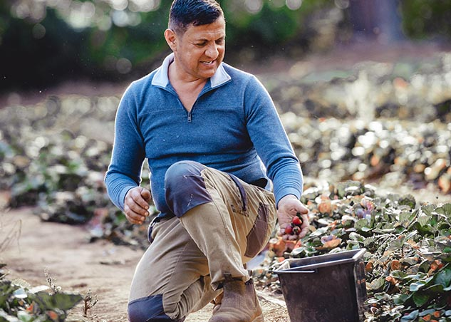
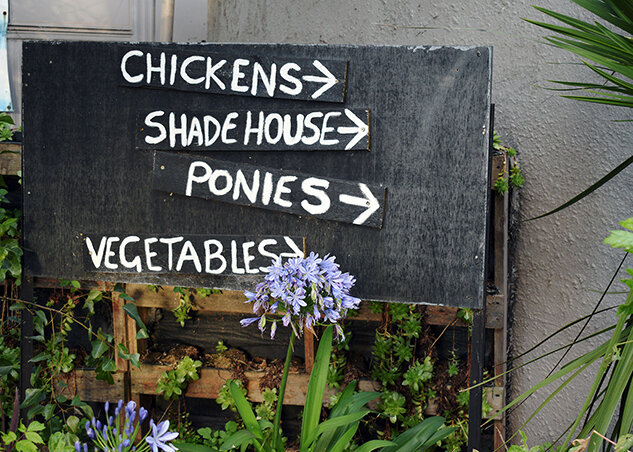
Explore our products
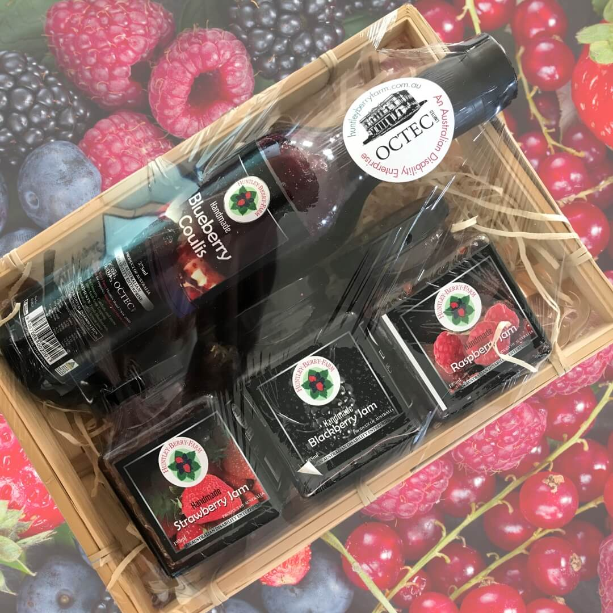
Our handmade jams and coulis packed in a timber crate. A favourite Christmas gift from the Central West.
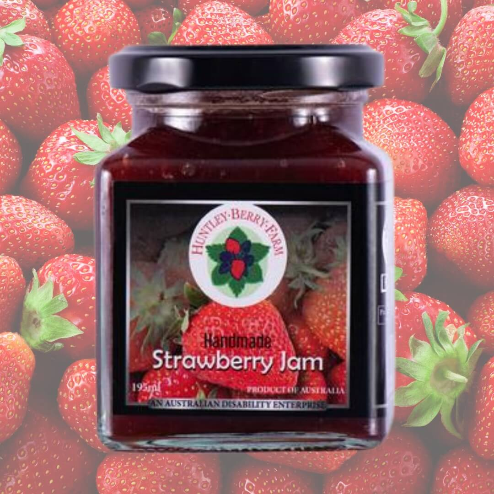
Strawberry, blackberry, raspberry and blueberry, made by hand from berries grown on the farm.
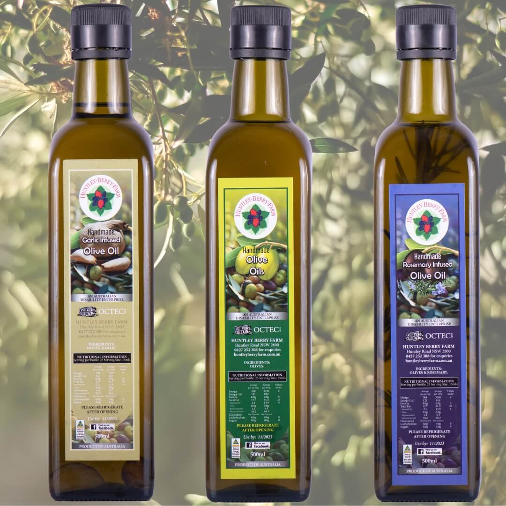
Australian olive oil, plain or infused with garlic or rosemary.
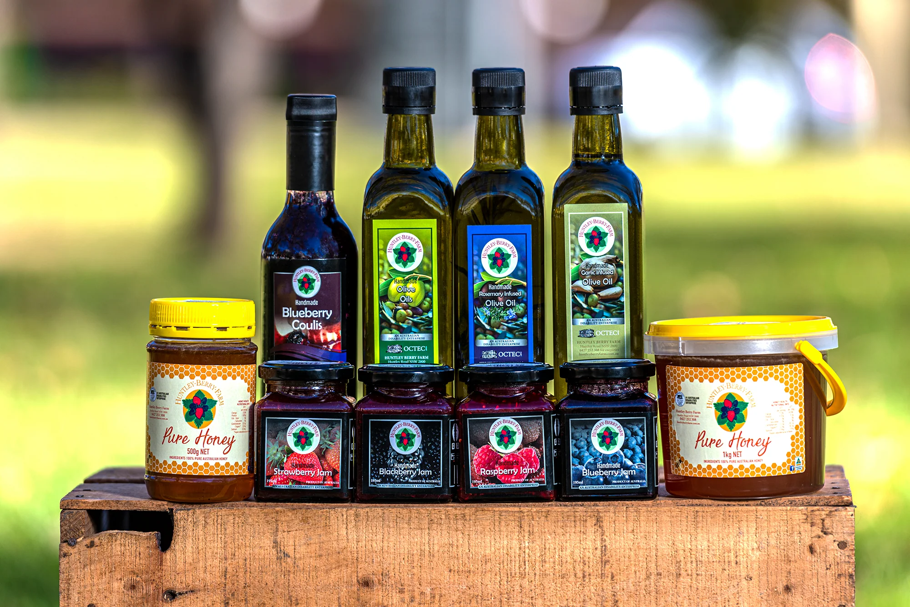
100% pure Australian honey in 500g jars and 1kg tubs.
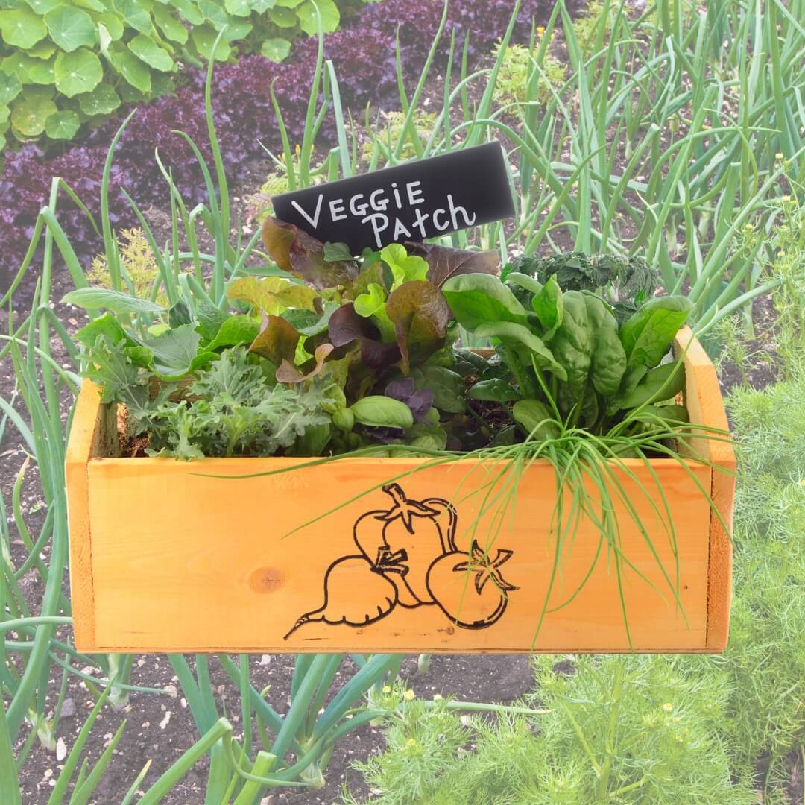
Fresh seasonal vegetables and seedlings for your own patch.
Farm to table
Everything on our shelves starts in the paddock. Berries picked at their peak go straight into small batches of jam and coulis, our olives are pressed into oil, and the market garden fills the shop with whatever is in season.
No long supply chains and no mystery ingredients. Just a small team, good soil and the cool Central West climate.
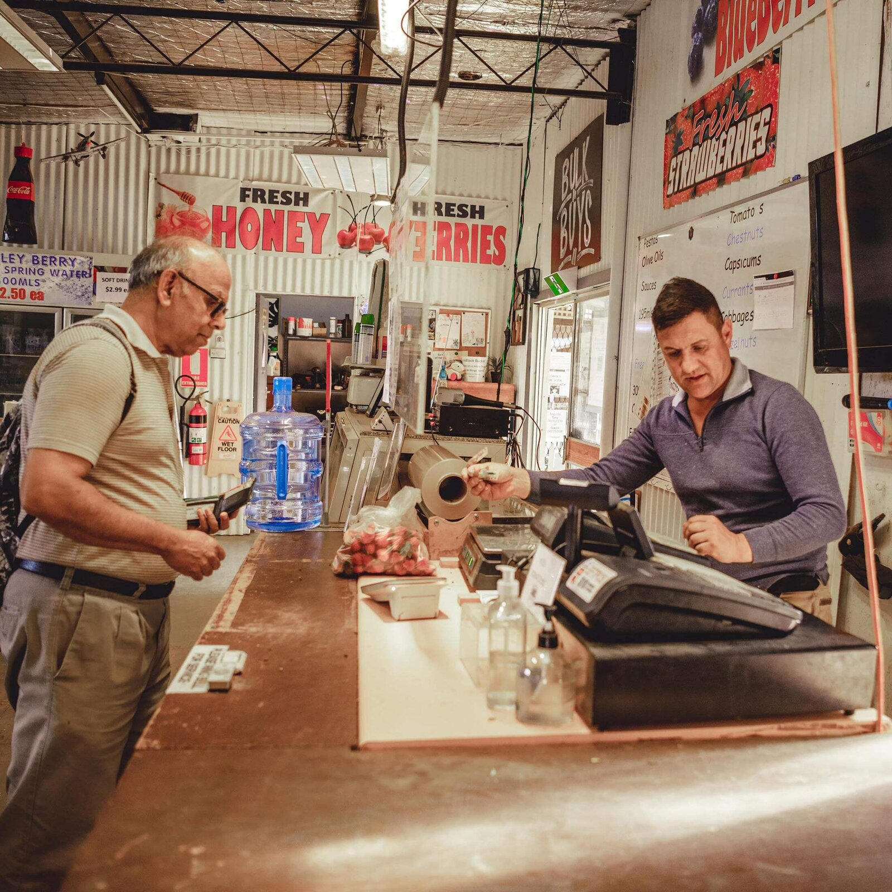
Featured products
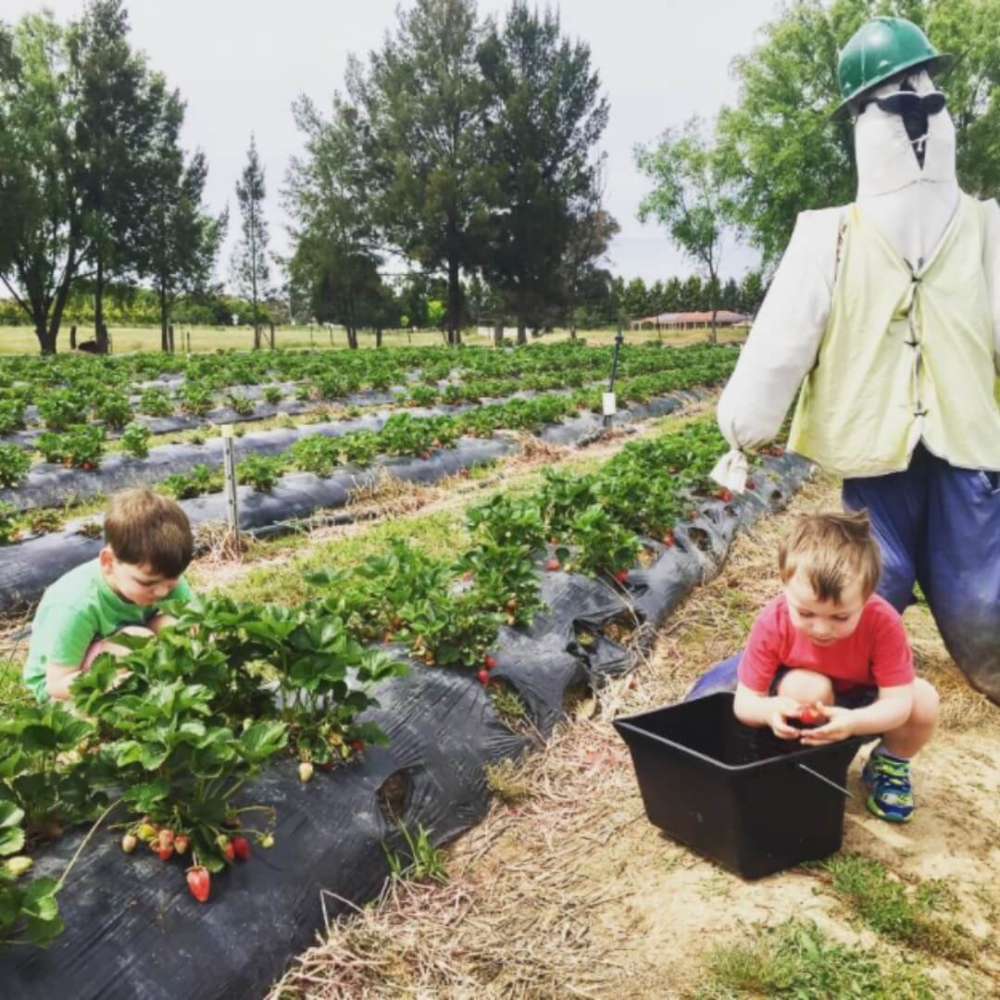
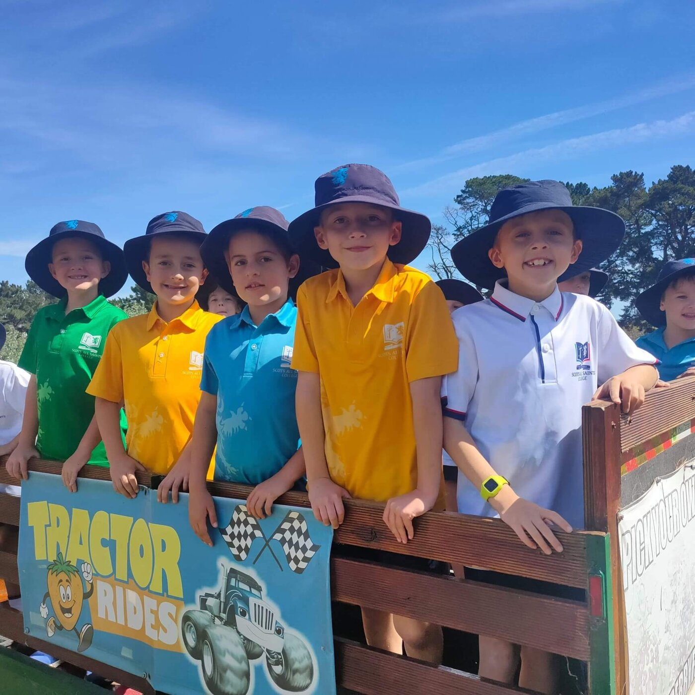
Visit the farm
Grab a bucket and wander the rows for strawberries, raspberries, blackberries and more. Say hello to the goats, horses, alpacas, rabbits and chickens, take a tractor ride on the weekend, and explore the Marang Indigenous Edible Garden.
Why Huntley Berry Farm
Our jams, coulis and oils are handmade from berries, vegetables and olives grown right here on the foothills of Mount Canobolas.
Huntley Berry Farm is a not-for-profit OCTEC NDIS service. Every purchase supports secure jobs, skills and independence for local people.
Order hampers, jams, coulis, honey and olive oil from our online shop, or call in at the farm shop on a picking weekend.
Ten minutes from Orange, with picking, animals, tractor rides, picnics and events through the season for families, schools and tour groups.
Online shop
Handmade jams, berry coulis, pure honey, olive oils and hampers, made by our team and sent from the farm. Every order supports supported employment in the Central West.